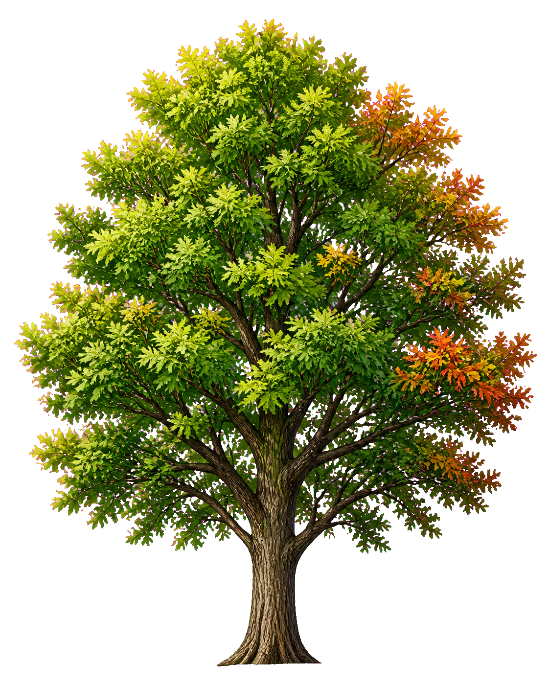

Karta drzewa
Wpis dokumentuje gatunek, lokalizację, termin nasadzenia, źródło sadzonki, opiekuna instytucjonalnego i powiązanie z dokumentacją nasadzenia.
Serwis porządkuje kompaktowy standard aktywnego zadrzewiania miasta: sadzenie właściwych drzew we właściwych miejscach, ochronę drzew istniejących, karty operacyjne, rejestr miejsc i monitoring efektów.
Pakiet MKD v1.4 po korekcie jest materiałem do uzgodnień wewnętrznych i podpisania zarządzenia. Do czasu przyjęcia dokumentu serwis ma charakter informacyjny i roboczy.

Każde drzewo ma swoją kartę
Każde posadzone drzewo ma własną kartę z gatunkiem, lokalizacją, datą nasadzenia i wynikami monitoringu przeżywalności po 12 i 24 miesiącach. Dla nasadzeń objętych dłuższą gwarancją możliwy jest także punkt 36 miesięcy.
Wpis dokumentuje gatunek, lokalizację, termin nasadzenia, źródło sadzonki, opiekuna instytucjonalnego i powiązanie z dokumentacją nasadzenia.
Status drzewa jest aktualizowany w punktach kontrolnych. Brak danych jest komunikowany jako brak danych, a nie jako sukces programu.
Nie publikujemy liczb, efektów ani partnerstw bez potwierdzonych danych i zgód komunikacyjnych.
Pierwsze nasadzenia planowane są na sezon jesień 2026. Karty pojawią się po wykonaniu nasadzeń i dokumentacji standardu.
Standard MKD v1.4
Osią pakietu jest aktywne zadrzewianie miasta: prosta decyzja, uzasadnienie, właściwa kategoria miejsca, karta operacyjna i wpis do rejestru.
Właściwe drzewo we właściwym miejscu: najpierw ocena możliwości, potem dobór taksonu, ochrona drzew istniejących, woda opadowa jako zasób i utrzymanie po posadzeniu.
Mikołów dąży do wykorzystania wszystkich racjonalnych miejsc dla nowych drzew. Nie sadzimy tylko tam, gdzie są uzasadnione przeciwwskazania.
Jeżeli miejsce pozwala, wybiera się drzewa duże, długowieczne i cieniodajne. Mniejsze formy oraz zieleń alternatywna są dla miejsc ograniczonych.
Przy starych drzewach analizuje się dosadzanie młodszych egzemplarzy, aby przestrzeń nie traciła cienia, krajobrazu i funkcji klimatycznej.
Drzewa i wartościowe samosiewy nie są automatycznie przeszkodą. Najpierw sprawdza się możliwość zachowania, zabezpieczenia albo włączenia w projekt.
Przy inwestycjach najpierw analizuje się retencję, infiltrację, rozszczelnienie i wykorzystanie wody opadowej. Kanalizacja jest rozwiązaniem ostatnim.
Miasto powinno umieć krótko wyjaśnić, dlaczego sadzi, nie sadzi, zachowuje drzewo albo je usuwa. Uzasadnienie jest częścią standardu.
Kategorie miejsc A-E
Pakiet v1.4 klasyfikuje miejsca sadzenia od łatwych terenów zieleni po lokalizacje niewłaściwe dla drzewa. To ta kategoria wskazuje, czy priorytetem jest drzewo duże, mniejsza forma czy zieleń alternatywna.
| Kategoria | Opis | Decyzja podstawowa |
|---|---|---|
| A - miejsce łatwe zielone | Park, skwer, szeroki trawnik, teren zieleni, dobra przestrzeń dla korzeni i korony. | Sadzenie priorytetowe; preferowane drzewa duże i średnie. |
| B - miejsce miejskie typowe | Ulica, plac, pobocze, parking, ograniczona przestrzeń, możliwe przesuszenie lub zasolenie. | Sadzenie po sprawdzeniu skrajni, sieci i warunków utrzymania. |
| C - miejsce trudne technicznie | Sieci, mała przestrzeń, bliskość budynków, widoczność, skrajnia, intensywny ruch. | Sadzenie ostrożne; drzewa małe, kolumnowe albo zieleń alternatywna. |
| D - miejsce klimatyczno-retencyjne | Szkoły, przedszkola, przystanki, parkingi, place przegrzewające się, miejsca możliwe do rozszczelnienia. | Priorytet dla zieleni, cienia i wody opadowej. |
| E - miejsce niewłaściwe dla drzewa | Lokalizacja, w której drzewo byłoby zagrożeniem, szybko obumarłoby albo powodowałoby stały konflikt. | Nie sadzić drzewa; wskazać zieleń alternatywną albo inną lokalizację. |
Karty operacyjne
Pakiet v1.4 wprowadza prostą Kartę Miejsca Nasadzenia oraz Kartę Terenu Inwestycji. To one mają zasilać Rejestr Wolnych Miejsc do Nasadzeń i dokumentację projektową.
Tworzy ją zarządca terenu, a akceptuje Wydział Ochrony Środowiska. W miejscach trudnych technicznie potrzebne są uzgodnienia branżowe.
Jest materiałem wejściowym dla projektanta oraz, w odpowiednim zakresie, elementem OPZ, SWZ i umowy z wykonawcą.
SOD, czyli strefa ochrony drzewa, obejmuje co do zasady rzut korony powiększony o pas co najmniej 1,5 m. W miejscach trudnych technicznie może być wyznaczona indywidualnie.
Ocena miejsca
Ocena w pakiecie v1.4 jest praktyczna: ma ustalić kategorię A-E, możliwość utrzymania i ograniczenia techniczne, a dopiero potem typ zieleni i takson.
Karta nie nakazuje sadzenia w każdym miejscu i nie nakazuje zachowania każdego drzewa. Nakazuje przeprowadzenie prostej oceny i zapisanie uzasadnienia decyzji.
| Pole oceny | Warianty z karty | Jak wpływa na decyzję |
|---|---|---|
| Miejsce dla korzeni | dobre / ograniczone / bardzo ograniczone | określa, czy możliwe jest drzewo duże, mniejsze, kolumnowe albo zieleń alternatywna |
| Miejsce dla korony | dobre / ograniczone / bardzo ograniczone | wymusza sprawdzenie odległości od budynków, dróg, granic działki i sieci |
| Warunki wodne | suche / przeciętne / okresowo wilgotne / możliwość wykorzystania wód opadowych | łączy dobór roślin z retencją, infiltracją i planem podlewania |
| Zasolenie i presja drogowa | brak / możliwe / wysokie | ogranicza wybór taksonów i może przenieść miejsce do kategorii B lub C |
| Kolizje | sieci / skrajnia / widoczność / budynki / granica działki / brak | wskazuje potrzebę uzgodnień, przesunięcia miejsca albo zieleni alternatywnej |
| Uzbrojenie podziemne | TAK / NIE / NIE DOTYCZY | bez sprawdzenia uzbrojenia miejsce nie powinno przechodzić do realizacji |
| Utrzymanie po posadzeniu | zapewnione / ograniczone / wymaga decyzji | brak utrzymania jest powodem uzupełnienia lub odrzucenia miejsca |
| Decyzja | akceptacja / do uzupełnienia / odrzucenie / zieleń alternatywna | każda decyzja wymaga krótkiego uzasadnienia |
Dobór taksonów
Załącznik informacyjny v1.4 nie jest zamkniętą listą normatywną. Ma pomagać w doborze typu zieleni do kategorii miejsca i być aktualizowany wraz z doświadczeniami utrzymaniowymi.
| Kategoria | Preferowany typ zieleni | Przykładowe taksony | Status / uwagi |
|---|---|---|---|
| A | drzewa duże i średnie | dąb szypułkowy, dąb bezszypułkowy, lipa drobnolistna, lipa szerokolistna, grab pospolity, klon zwyczajny, klon jawor, buk pospolity, platan klonolistny, wiązy odporne | podstawowe lub warunkowe; platan i buk tylko przy dobrych warunkach |
| B | drzewa średnie odporne miejsko | klon polny, lipa srebrzysta "Brabant", grusza "Chanticleer", leszczyna turecka, miłorząb męski, jarząb mączny, chmielograb europejski, glediczja "Skyline", wiązy odporne | wymaga sprawdzenia skrajni, sieci, gleby, zasolenia i podlewania |
| C | drzewa małe, kolumnowe, formy zwarte | grab "Frans Fontaine" i "Fastigiata", klon polny "Fastigiatum", grusza "Chanticleer" i "Redspire", jarząb "Fastigiata", jabłoń ozdobna "Evereste", świdośliwa "Robin Hill", wiśnia Sargenta "Rancho" | warunkowe; nie sadzić na siłę, przy braku warunków wybrać zieleń alternatywną |
| D | drzewa cieniodajne lub odporne, zależnie od dostępności wody | lipa drobnolistna, lipa srebrzysta "Brabant", klon zwyczajny, klon polny, dęby, platan, grab, glediczja "Skyline", wiązowiec zachodni | priorytet dla cienia i retencji; wiązowiec jako takson warunkowy lub pilotażowy |
| E | zieleń alternatywna | głogi, śnieguliczka Chenaulta, wiciokrzew zaostrzony, derenie, kalina koralowa, bluszcz pospolity, winobluszcz pięciolistkowy, tawuły | gdy drzewo nie ma warunków trwałego rozwoju |
Pakiet v1.4 oznacza je jako warunkowe, testowe albo pilotażowe. Nie powinny stać się standardem bez obserwacji utrzymaniowej.
Bez regresji zachowujemy zasadę niewprowadzania gatunków inwazyjnych i prawnie regulowanych. Pełna lista wymaga aktualizacji w dokumencie technicznym przed decyzją terenową.
Dokumenty T-01-T-09
Pakiet v1.4 jest minimalistyczny: dokumenty techniczne nie muszą być gotowe przed przyjęciem Karty, ale powinny powstawać stopniowo, aby wzmacniać wykonanie standardu.
| Kod | Dokument techniczny | Zakres | Priorytet / właściciel |
|---|---|---|---|
| T-01 | Standard projektowania zieleni przy inwestycjach | Karta Terenu Inwestycji, SOD, drzewa w projekcie, uzbrojenie, wariantowanie. | wysoki - inwestycje i WOŚ |
| T-02 | Standard zagospodarowania wód opadowych dla zieleni | Retencja, infiltracja, rozszczelnienia, ogrody deszczowe, kanalizacja jako rozwiązanie ostatnie. | wysoki - WOŚ, inwestycje, infrastruktura |
| T-03 | Standard ochrony drzew na placu budowy | Wygrodzenia, zakazy w SOD, korzenie, gleba, sprzęt, nadzór, dokumentacja fotograficzna. | wysoki - WOŚ i zamówienia |
| T-04 | Standard nasadzeń i pielęgnacji po posadzeniu | Materiał szkółkarski, sadzenie, podlewanie, ściółka, stabilizacja, gwarancja, odbiory po 12 i 36 miesiącach. | wysoki - WOŚ i ZUK |
| T-05 | Standard cięć i utrzymania drzew | Cięcia sanitarne, techniczne i formujące, zakaz ogławiania, skrajnia, kwalifikacje. | średni - WOŚ i ZUK |
| T-06 | Standard danych i Rejestru Wolnych Miejsc do Nasadzeń | Pola danych, format GIS/GPKG, statusy, odpowiedzialność za aktualizację, raporty. | średni - WOŚ, geodezja, IT |
| T-07 | Wzory klauzul i kar umownych | Warianty dla projektowania, robót budowlanych, pielęgnacji i nasadzeń; widełki kar po akceptacji prawnej. | wysoki - zamówienia, radca prawny, WOŚ |
| T-08 | Procedura współpracy z zarządcami zewnętrznymi | Drogi powiatowe, gestorzy sieci, organy zewnętrzne, nasadzenia kompensacyjne spoza decyzji gminy. | średni - Sekretarz, WOŚ, inwestycje |
| T-09 | Instrukcja dla szkół, przedszkoli i jednostek miejskich | Jak zgłaszać miejsca, jak pielęgnować, jak raportować i współpracować z programem "Zasadź drzewo". | średni - WOŚ, oświata, ZUK |
Relacja z gminną MKD
To kompaktowy standard aktywnego zadrzewiania miasta, ochrony drzew istniejących oraz uwzględniania zieleni, gleby i wód opadowych w zadaniach miejskich.
To informacyjna warstwa WWW, która porządkuje zasady, kategorie miejsc, karty operacyjne, tabelę taksonów oraz przyszłe rejestry bez publikowania niepotwierdzonych danych.
Model danych zachowuje miejsce na Rejestr Wolnych Miejsc do Nasadzeń, karty drzew i formaty GIS/GPKG wskazane do dopracowania w dokumencie technicznym T-06.
Rejestr drzew
Licznik jest liczony z danych w pliku rejestru. Do czasu pierwszych udokumentowanych nasadzeń rejestr kart drzew pozostaje pusty; Rejestr Wolnych Miejsc do Nasadzeń jest przewidziany jako osobna warstwa danych.
Rejestr jest pusty. Pierwsze nasadzenia planowane są na sezon jesień 2026. Karty pojawią się po wykonaniu nasadzeń i dokumentacji standardu.
Pierwsze nasadzenia planowane są na sezon jesień 2026. Karty pojawią się po wykonaniu nasadzeń i dokumentacji standardu.
Mapa lokalizacji
W tym sprincie mapa jest statycznym placeholderem. Nie używamy zewnętrznych bibliotek map ani nie publikujemy lokalizacji bez kart w rejestrze.
Mapa lokalizacji zostanie opublikowana po wykonaniu nasadzeń, dokumentacji i weryfikacji danych.
Partnerzy i status
Nie osadzamy herbu, logotypów ani znaków partnerów w tym sprincie. Pakiet v1.4 pozostaje materiałem do uzgodnień wewnętrznych i podpisania zarządzenia.
Pakiet Mikołowskiej Karty Drzew v1.4 po korekcie jest materiałem do uzgodnień wewnętrznych i wymaga formalnego przyjęcia.
Robocza inicjatywa mieszkańców rozwijająca społeczną część serwisu, komunikację standardu odpowiedzialnych nasadzeń i przyszły mechanizm zgłoszeń mieszkańców.
Partner współpracy ramowej w zakresie standardu nasadzeń, edukacji przyrodniczej i monitoringu.
Kontakt
Dane kontaktowe są pobierane z konfiguracji projektu. Na start pozostają placeholderami do zatwierdzenia.
Polityka prywatności i wizerunku: placeholder do uzupełnienia.